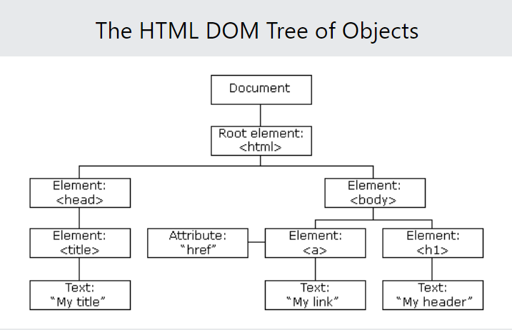

Important FAQ
DOM stands for Document Object Model that connects web pages to scripts or programming languages by representing the structure of a document—such as the HTML representing a web page—in memory. The DOM represents a document with a logical tree. Each branch of the tree ends in a node, and each node contains objects.

JavaScript provides several methods to select DOM elements.
1. getElementById - Selects an element by its
unique ID:
const element = document.getElementById('myId');
2. getElementsByClassName - Selects all
elements with a specific class (returns an HTMLCollection):
const elements = document.getElementsByClassName('myClass');
3. getElementsByTagName - Selects all
elements with a specific tag name (returns an HTMLCollection):
const elements = document.getElementsByTagName('div');
4. querySelector - Selects the first element
that matches a CSS selector:
const element = document.querySelector('.myClass');
5. querySelectorAll - Selects all elements
that match a CSS selector (returns a NodeList):
const elements = document.querySelectorAll('div.myClass');
Each method has its specific use case depending on whether you're selecting by ID, class, tag, or CSS selector.
Event delegation is a technique in the DOM where you attach a single event listener to a parent element instead of attaching it to multiple child elements. This listener can then handle events from all child elements by taking advantage of event propagation (specifically, event bubbling).
Why It's Useful:
Performance: Instead of attaching multiple listeners to each child element, you only need one listener on the parent. This reduces memory usage and improves performance, especially for dynamic content.
Handling Dynamic Content: If new child elements are added dynamically (e.g., with JavaScript), event delegation allows those elements to inherit the event listener without requiring additional code to attach new listeners.
Easier Maintenance: Since there's only one listener to manage, it simplifies the code, making it more readable and easier to debug. additional code to attach new listeners.
To manipulate an element's attributes and styles using the DOM, JavaScript provides several methods and properties.
Manipulating Attributes:
getAttribute(): Retrieves the value of an attribute.
setAttribute(): Sets a new value for an attribute.
removeAttribute(): Removes an attribute from an element.
Manipulating Styles:
classList.add(): Adds a class to the element.
classList.remove(): Removes a class from the element.
classList.toggle(): Toggles a class on or off.
Inline Styles (Using style property)